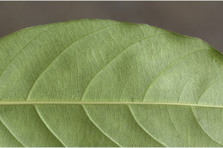
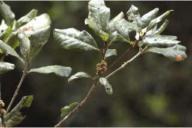
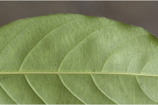
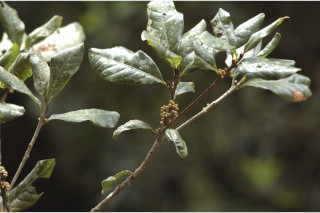

Small trees up to 15 m tall.
15 ಮೀ ಎತ್ತರದವರೆಗಿನ ಸಣ್ಣ ಗಾತ್ರದ ಮರಗಳು.
Small trees up to 15 m tall.
சிறிய மரம் 15 மீ. உயரம் வரை வளரக்கூடியது.
Bark greyish brown, irregularly large flaky; blaze reddish.
ತೊಗಟೆ ಬೂದು ಮಿಶ್ರಿತ ಕಂದು ಬಣ್ಣದಲ್ಲಿದ್ದು ಅನಿಯತವಾಗಿ ಚಕ್ಕೆಯೇಳುವ ಮಾದರಿಯಲ್ಲಿರುತ್ತದೆ;ಕಚ್ಚು ಮಾಡಿದ ಜಾಗ ಕೆಂಪು.
Bark greyish brown, irregularly large flaky; blaze reddish.
மரத்தின் பட்டை சாம்பல்-ப்ரவுன் நிறமானது , ஒழுங்கற்ற பெரியவை பெரிய செதில்களாக உதிருபவை; உள்பட்டை சிவப்பு நிறமானது.
Branchlets terete, stout, rufous pubescent when young.
ಕಿರುಕೊಂಬೆಗಳು ದುಂಡಾಗಿದ್ದು ದೃಢವಾಗಿರುತ್ತವೆ ಹಾಗೂ ಎಳೆಯದಾಗಿದ್ದಾಗ ಕೆಂಗಂದು ಬಣ್ಣದ ಮೃದು ತುಪ್ಪಳದಿಂದ ಕೂಡಿರುತ್ತವೆ.
Branchlets terete, stout, rufous pubescent when young.
சிறியநுனிக்கிளைகள் குறுக்குவெட்டுத் தோற்றத்தில் வளையமானது, தடித்தவை, இளம்பருவத்தில் உரோமங்களுடையது.
Latex milky white, profuse.
ಎಲೆಗಳು ಸರಳವಾಗಿದ್ದು ಪರ್ಯಾಯ ಮತ್ತು ಸುತ್ತು ಜೋಡನಾ ವ್ಯವಸ್ಥೆಯಲ್ಲಿರುತ್ತವೆ; ತೊಟ್ಟು 0.7 – 1.5 ಸೆಂ.ಮೀ.ವರೆಗಿನ ಉದ್ದವಿದ್ದು,ಸ್ವಲ್ಪ ಮಟ್ಟಿಗೆ ಕಾಲುವೆಗೆರೆಯನ್ನು ಹೊಂದಿದ್ದು ಎಳೆಯದಾಗಿದ್ದಾಗ ಮೃದುತುಪ್ಪಳ ಸಹಿತವಿರುತ್ತದೆ; ಪತ್ರಗಳು 4 -11 X 1.5 – 5 ಸೆಂ.ಮೀ. ಗಾತ್ರ,ಅಂಡವೃತ್ತದ ಆಕಾರ ಹೊಂದಿದ್ದು,ಚೂಪಾದುದರಿಂದ ಚೂಪಲ್ಲದ ಮಾದರಿವರೆಗಿನ ತುದಿ,ಬೆಣೆಯಾಕಾರದವರೆಗಿನ ಬುಡ, ತರಂಗಿತವಾದ ಮತ್ತು ಹಿಂಸುರುಳಿಗೊಂಡ ಅಂಚು,ತೆಳು ತೊಗಲನ್ನೋಲುವ ಮೇಲ್ಮೈ ಹೊಂದಿದ್ದು ರೋಮರಹಿತ -ವಾಗಿರುತ್ತವೆ ;ಮಧ್ಯನಾಳ ಪತ್ರದ ಮೇಲ್ಭಾಗದಲ್ಲಿ ತೆಳುವಾಗಿ ಮೇಲೆದ್ದಿರುತ್ತದೆ; ಎರಡನೇ ದರ್ಜೆಯ ನಾಳಗಳು 6 – 10 ಜೋಡಿಗಳಿರುತ್ತವೆ;ಮೂರನೇ ದರ್ಜೆಯ ನಾಳಗಳು ಓರೆಯಾಗಿದ್ದು,ಕಡಿಮೆ ಅಂತರ ಹೊಂದಿದ್ದು ಎಲೆ ದಿಂಡಿಗೆ ಅಡ್ಡವಾಗಿ ಕೂಡುತ್ತವೆ.
Latex milky white, profuse.
வெள்ளை நிற பால் அதிகளவு சுரக்கிறது.
Leaves simple, alternate, spiral; petiole 0.7-1.5 cm, slightly canaliculate, pubescent when young; lamina 4-11 x 1.5-5 cm, elliptic, apex acute to obtuse, base cuneate, margin undulate and revolute, thinly coriaceous, glabrous; midrib thinly raised above;
ಪುಷ್ಪಮಂಜರಿಗಳು ಅಕ್ಷಾಕಂಕುಳಿನಲ್ಲಿನ ಗುಚ್ಛಗಳ ಮಾದರಿಯವು;ಹೂಗಳು ಬಿಳಿ ಬಣ್ಣ ಹೊಂದಿದ್ದು ತೊಟ್ಟುರಹಿತವಾಗಿರುತ್ತವೆ.
Leaves simple, alternate, spiral; petiole 0.7-1.5 cm, slightly canaliculate, pubescent when young; lamina 4-11 x 1.5-5 cm, elliptic, apex acute to obtuse, base cuneate, margin undulate and revolute, thinly coriaceous, glabrous; midrib thinly raised above;
இலைகள் தனித்தவை, மாற்றுஅடுக்கமானவை, சுழல் போன்று அமைந்தவை; இலைக்காம்பு 0.7-1.5 செ.மீ., குறுக்குவெட்டுத் தோற்றத்தில் சிறிது கேனாலிகுலேட், இளம்பருவத்தில் உரோமங்களுடையது; இலை அலகு 4-11 X 1.5-5 செ.மீ., நீள்வட்ட வடிவானது, அலகின் நுனி கூரியது முதல் மெட்டையானது, அலகின் தளம் ஆப்பு வடிவானது, அலகின் விளிம்பு அலை போன்றது மற்றும் பின்புறம் வளைந்து (ரெவலுட்) காணப்படும், மெல்லிய கோரியேசியஸ், உரோமங்களற்றது; மையநரம்பு மேற்புறத்தில் அலகின் பரப்பைவிட சிறிது உயர்ந்து இருக்கும்; இரண்டாம் நிலை நரம்புகள் 6-10 ஜோடிகள்; மூன்றாம் நிலை நரம்புகள் தளம் நோக்கிய இணையான நெருக்கமான பெர்க்கரண்ட்.
Inflorescence axillary fascicles; flowers white, sessile.
ಬೆರ್ರಿ ಬುಗುರಿ ರೀತಿಯ ಆಕಾರ ಹೊಂದಿರುತ್ತದೆ;ಬೀಜದ ಸಂಖ್ಯೆ 1.
Inflorescence axillary fascicles; flowers white, sessile.
மஞ்சரி இலைக்கோணங்களில் தொகுப்பாக காணப்படுபவை; மலர்கள் வெள்ளை நிறமானது, காம்பற்றது.
Berry, obovoid; seeds one.
Berry, obovoid; seeds one.
முழுச்சதைகனி (பெர்ரி), தலைகீழ் முட்டை வடிவானது; ஒர் விதையுடையது.


 


